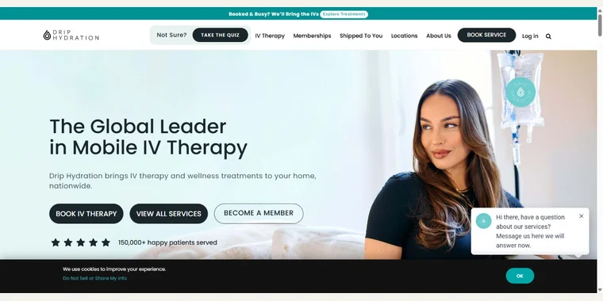
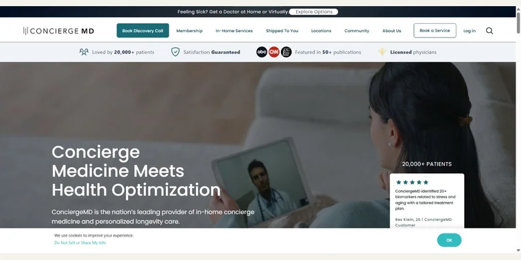
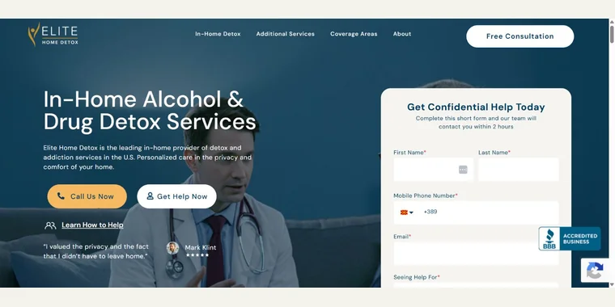
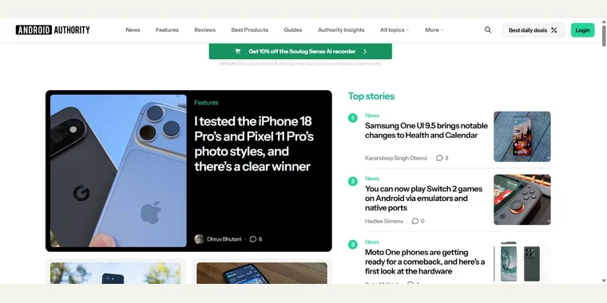
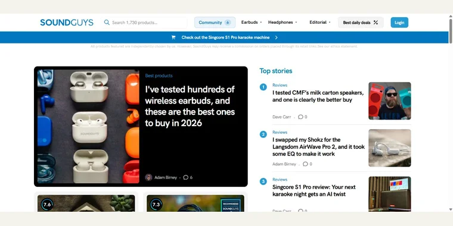
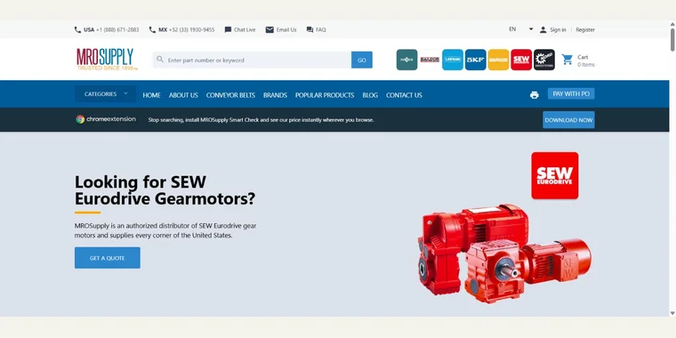
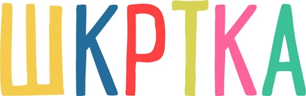
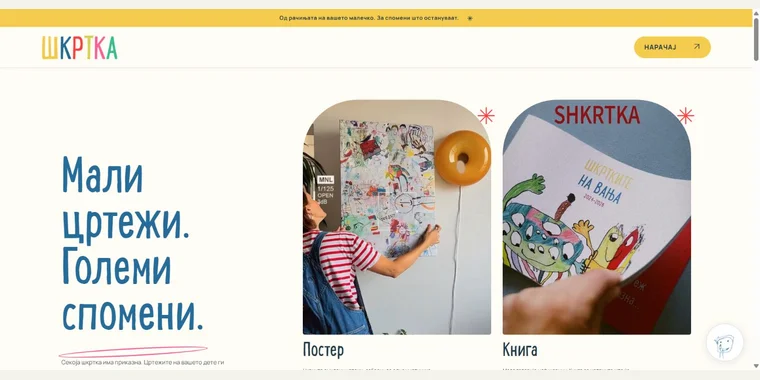

Search & intelligence.
Market and competitor research, journey and intent analysis, technical and on-page SEO, site architecture, local SEO, GBP, citations, digital PR, link strategy, and AEO/GEO strategy and tracking.
I’m Aleksandar Spasevski. I connect SEO and GEO strategy, delivery operations, and AI-native automation to turn complex growth challenges into clear next moves.
Explore my experienceOrganic traffic growth
Android Authority & SoundGuys
Shorter delivery cycles
Novachrom multi-brand portfolio
Client accounts in scope
HQDM operations & automation
01 / CAREER & RESULTS
Strategy, delivery, and the systems behind growth.
Explore the work inside each role.
HQDM · U.S. local-search marketing agency
Audited the team structure and delivery workflows behind 150+ service-business accounts, then built the AI-native tools, reporting standards, and recovery programs to improve delivery and client outcomes.
Novachrom Web · Drip Hydration, ConciergeMDLA, Elite Home Detox & ClearifyRX
Led SEO, client success, and a 40+ person delivery organization across 100+ accounts and four national healthcare brands, each with distinct audiences, funnels, and competitive landscapes.
Android Authority & SoundGuys
Ran SEO concurrently across two major editorial properties, addressing deep technical debt across tens of thousands of pages while connecting the editorial and engineering teams.
Selected outcomes from my career roles. Figures reflect the role and business context described above; revenue outcomes include the contribution of the wider teams.
02 / SELECTED WORK
Open a card to see the work behind each name.
Led SEO for Novachrom’s largest account. Built the local search playbook for expansion, from market selection to localized content and service-area pages.
100+ locations worldwide. Supported the expansion during a period when monthly brand revenue peaked at approximately $20 million.
Loopex Digital reported these figures for its link-building engagement, which began in September 2020. Read the case study ↗ (opens in a new tab)

“mobile IV therapy provider 100 cities worldwide hydration at home”
View the page surfaced in web search ↗ (opens in a new tab)Directed SEO as part of Novachrom’s healthcare portfolio. Across the brands, I mapped search intent and customer journeys, then built shared content briefs, page standards, and editorial checks.
Across Novachrom’s wider delivery organization, delivery cycles were 72% shorter and rework fell 64%.

“in-home services concierge medicine primary care national at-home lab draw mobile imaging”
View the page surfaced in web search ↗ (opens in a new tab)Directed SEO as part of Novachrom’s healthcare portfolio. Across the brands, I worked with founders on technical and content roadmaps, landing page copy, and conversion improvements.
Across Novachrom’s wider delivery organization, delivery cycles were 72% shorter and rework fell 64%.

“in home detox medical support and sober companion Pennsylvania”
View the page surfaced in web search ↗ (opens in a new tab)Led technical and editorial SEO. Resolved media optimization and internal linking issues, and built and trained a five-person SEO team.
Contributed to 3× organic traffic across Android Authority and SoundGuys.

“Android phone buying guide best Android phones”
View the page surfaced in web search ↗ (opens in a new tab)Managed SEO alongside Android Authority. The work across both sites covered page weight, rendering performance, media upload standards, and editorial quality checks.
Contributed to 3× organic traffic across SoundGuys and Android Authority.

“best wireless noise cancelling headphones lab testing frequency response”
View the page surfaced in web search ↗ (opens in a new tab)I worked with MROSupply, an industrial supplies retailer with an online product catalog.

“what are NEMA electric motor frame dimensions shaft height 145T vs 56 frame”
View the page surfaced in web search ↗ (opens in a new tab)
ShkrtkaView workCreated a Macedonian-language site for turning children’s drawings into personalized posters and books. The site combines product storytelling, video previews, FAQs, and an order form with artwork uploads. I also worked on search-focused Reel captions, ad copy, and an infographic explaining what families can send.
A live product site with a path from browsing the products to submitting artwork with an order.

03 / HOW I WORK
Good strategy only matters when the team, the tools, and the delivery can support it.
I’m a client-facing SEO and GEO director with 13+ years across B2B and B2C markets, agency teams, editorial publishers, and multi-brand portfolios. My work spans local and national search growth, leadership, client success, and automation.
I connect the commercial question to the search opportunity, then build the workflows, content systems, quality standards, and reporting needed to execute. I also build independent web projects to keep the thinking close to the craft.
Connect on LinkedIn (opens in a new tab)04 / SKILLS & TOOLSET
The commercial thinking, the search expertise,
and the systems to make it happen.
Market and competitor research, journey and intent analysis, technical and on-page SEO, site architecture, local SEO, GBP, citations, digital PR, link strategy, and AEO/GEO strategy and tracking.
Content strategy, management and execution; conversion optimization; multichannel audits; paid media and PPC audits; budget allocation; ROAS, CAC, profitability, attribution, and investment efficiency.
Delivery leadership, client success, stakeholder management, workflow audits, process automation, business development, growth strategy, reporting, measurement, and data aggregation.
OpenAI and Anthropic frameworks, agentic workflows, reporting automation, HTML, CSS, JavaScript, responsive and accessible interfaces, Node.js, SQLite, and GitHub Pages.
TOOLS I WORK WITH
05 / START A CONVERSATION
↗A search challenge, a team to scale, a system to build.
Let’s see where it could go.